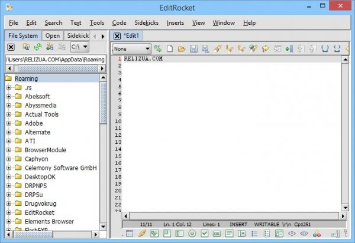

Категория: Разное

EditRocket – программа, представляющая собой, мощную среду разработки, редактор текста и исходного кода. С помощью инструмента вы всегда быстро и просто создадите свой веб-сайт или различные приложения. EditRocket имеет ряд полезных настраиваемых инструментов и поддерживает следующие языки программирования: Groovy, C, Scala, C++, Objective-C,Shell Script, Perl,HTML,PHP, CSS, Java,Python, javascript, Ruby, XML, Text, JSP, ActionScript, TSQL и прочие. Утилита поддерживает все популярные ОС: Mac. Linux. Windows. Для каждой из архитектуры ОС Windows, следует скачивать свою версию.
Лицо всем программы – это графический интерфейс, который у приложения сделан интуитивно понятно и грамотно. Поддержка вкладок позволит одновременно работать над несколькими проектами, а из панели навигации можно получить быстрый доступ к файлам на ПК или в библиотеках.
В инструменте собрано множество шаблонов, документов и библиотек для того, чтобы вы быстро и не отрываясь на поиски, могли работать над программой или кодом. Например, существует возможность начать новый проект с нуля с использованием нужного языка программирования и на основе нескольких встроенных шаблонов. Внушительный список языков программирования, я приводил выше в статье, а еще одной сильной стороной являются функции, и среди них: подсветка синтаксиса, визуальный просмотр, FTP-соединение и многое другое. Независимо от языка программирования, с которым вы работаете, приложение оснащено IntelliSense для минимизации возможных ошибок.
Помимо прочего хочется, акцентировать внимание на том, что вы не просто записываете свой код, но можете также проверить его на имеющиеся ошибки, а дополнительные параметры позволят экспортировать его в популярные форматы или загрузить на FTP / SFTP-сервер.
Подведя итог, можно сказать, что утилита это мощная среда разработки, с помощью которой как новички, так и энтузиасты могут создавать приложения и веб-страницы с нуля. Скачать EditRocket можно по ссылке, указанной ниже текста.